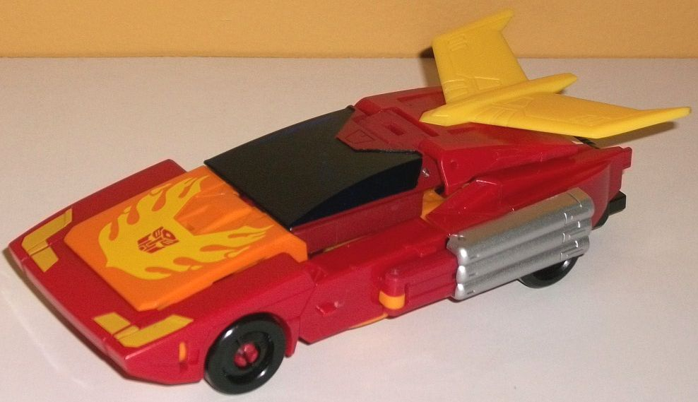
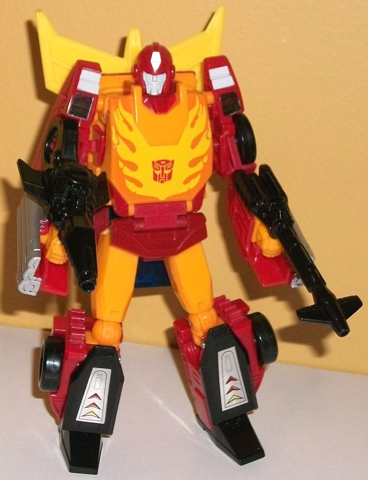
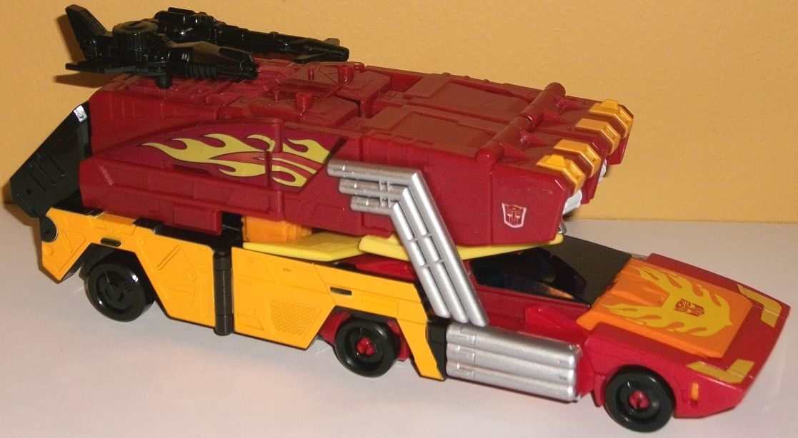
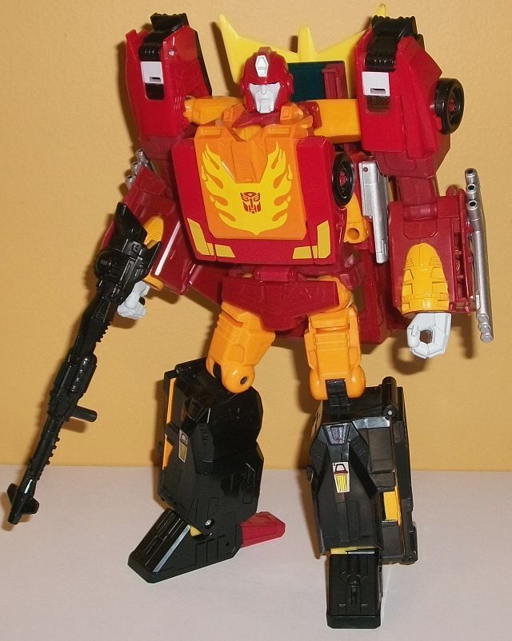

Allegiance
: Autobot
Size
: Leader
Difficulty of Transformation to Rodimus'
Robot Mode
: Easy
Difficulty of Transformation to Rodimus
Prime's Robot Mode
:
Color Scheme
: Moderately dark red,
dark red, black, light orange, yellow, and some silver, transparent dark
blue, and light chalky gray
Rating
: 8.9


Like the other Power
of the Primes Leader class toys, Rodimus has an "evolution" gimmick, in
which the toy has both a "normal" and an "upgraded" version for both the
vehicle and robot modes. First, let's take plain ol' Rodimus/Hot Rod. In
vehicle mode, this is very much a
G1-update
;
he's quite square overall for a sportscar, with relatively little mold
detailing and an overall look that calls back to the G1 toy pretty directly,
but with a flatter top. With the G1 toy, the front window section at least
curved up, but here pretty everything is angles. The cockpit itself is
actually rather small even by Hot Rod proportions, and doesn't stick up
enough from the surrounding parts to really look "right"; that's my biggest
issue with this mode. Another, much smaller, issue is that on the back
end, there's an obvious gap in the middle which is the spot in between
his two robot legs; I'm not sure why Hasbro didn't just include a little
peg in the middle of his legs to have them connect to each other, but alas,
that's not the case here. This mode is kibble-free--always a plus. All
of the important details are here, too-- the symmetrical flames on the
front hood with an Autobot symbol in the middle of them; yellow, simplistic
angular headlights; a three-pronged yellow fin-like spoiler; three exhaust
pipes on each side of the toy; and a nice dark, transparent blue color
used for the cockpit plastic, which helps hide the fact it's a shallow
cockpit and there isn't much behind it, in actuality. There's a couple
of simplistic shapes on the spoiler and tailpipes, but other than that
the mold detailing is VERY basic and honestly a bit disappointing for a
Generations figure, even one that's supposed to be streamlined. A bit more
detail on the front grill in particular would've been appreciated. The
color scheme takes a somewhat dark red and pairs it with a light orange
on most of the front hood, along with some yellow on the spoiler and the
dark blue on the cockpit. It's a pretty good color scheme overall, with
the red, yellow, and orange complementing each other pretty nicely while
the blue in the cockpit provides some decent contrast. There's also yellow
paint on the headlights (and of course, the flames) and some silver on
the tailpipes, which helps for some accents. That said, in a really weird
decision, the middle portion of this mode is a noticeably darker, duller
shade of red plastic than the rest of Rodimus; it looks a bit off, as it's
not enough of a difference to make for some obvious contrast, and looks
almost like a mistake. Still, it's relatively minor, overall.
Rodimus' transformation
to his robot mode is pretty simple; heck, you can figure most of it out
by just looking at the bottom of his vehicle mode. The tailpipes fold up
and the sides fold out to become his arms; the top/roof/spoiler section
rotates around; the back end splits apart to become his legs; and then
the robot chest opens up so you can rotate in the front bumper and out
the robot head in its place before clamping it shut again. (The hood section
from vehicle mode is actually not used in this mode; he's got a "faux hood"
chest for this robot mode.) Overall this is a pretty solid Rodimus, with
generally good proportions. The only exception to this are his arms, which
are a little too skinny when looked at from a straight-on view. There's
also a little bit of kibble; the tailpipe and car sections do stick out
in front of his fists a bit (definitely making the arms the weakest part
of this mode), and the cockpit hangs down below his butt some. They're
not huge issues, but noticeable. His lower legs could stand to be just
a TITCH larger, but that's really being persnickety. The mold detailing
in general stays fairly sparse in this mode, though parts of him that demand
more intricate detailing-- like the fists and head-- are sculpted pretty
well. Rodimus' curved helmet with circular "earbuds", a few minor angular
details, and a "normal" face is replicated pretty well here. The color
on his flamed chest, the small waist flap, the fairly skinny legs and the
bulkier lower legs; it's all good here. The color breakup is also pretty
accurate to the G1 toy, with orange dominating the main body, upper legs,
and hands, while his trademark spoiler sticks up behind his back. He's
got some black on his lower legs and wheels, as expected. He does have
some more of that slightly darker red on his waist and some smaller connector
parts, to boot. There's a rather unique light chalky gray used for parts
on his upper shoulders and his face, which looks good and may have just
a tad of a purple/blue tint to it, which is a bit odd but it's only slight.
The flames and Autobot symbol on the chest are, of course, done marvelously
once again. Unfortunately, those awful foil stickers are used in this mode,
for the triangular details on Rodimus' shoulders and lower legs. They really
should've just been paint, as they don't fit in with the rest of the figure
at all. Rodimus has a two-part black gun, which can be combined into a
longer sniper rifle and that has some fairly intricate mold detailing on
it that is pretty G1-accurate. For articulation in this mode, Rodimus can
move at the neck, shoulders (at two points), elbows (at two points), hips
(at two points), knees (at three points), and up-and-down at the ankles
slightly. I do wish his shoulders weren't so narrow, but otherwise he's
fairly well-articulated in this mode.


For Rodimus Prime's
vehicle mode, you just fold the tailpipe sections on the side of Rodimus'
vehicle forward, then push him back and slot him into the cavity on the
trailer. Then you close panels around the rear half of this vehicle mode,
rotate the angular tailpipes down, and there you go. This mode is generally
quite solid, and pretty accurately replicates Rodimus Prime's "Winnebago"
trailer while also adding a fair amount of new molded details, unlike the
core Rodimus figure. There's panels of all sorts on the sides, along with
a few vents. The top has some more rectangular panel lines, and two little
pegs on the top for Prime/Titan masters to stand on. There's also two holes
near the back for the toy's guns. The proportions of the trailer are pretty
solid, overall. The feet are a bit obvious on the backside (particularly
because of their color), but they do at least fit up flat against the backside.
More annoying from a frontal angle are the obvious Prime mode fists just
kinda sticking out there on the front of the trailer portion. From the
sides and top they're covered, but not at all from the front. The top of
the trailer is mostly the same dull red that was used only for the middle
of Rodimus' car mode-- why IS there this odd change in red here?-- but
it's still a solid shade. There's some more light orange on the lower sides,
which helps make the trailer look more eye-catching, along with a bit more
orange on the front top of the trailer. Unfortunately the flame details
on the sides are those awful foil stickers, and what's worse is that they're
right around a hinge, so after transfomrations they tend to curl up/bend
a bit at that portion-- this is definitely my biggest pet peeve about this
mode, by far. There's also two Autobot symbol foil stickers on the front
sides of the trailer. One last thing, is that I really do love how they
added the elongated exhaust pipes that rotate down to the car's exhaust
pipes to make them longer and help integrate the car with the trailer more.
It's lovely.
Previous toys that have
both "Hot Rod/Rodimus" and "Rodimus Prime" robot modes have mostly just
had Rodimus kinda "elongate" into Rodimus Prime, but wow, this toy really
has some creative ideas. The "core" toy basically does the splits and flips
around a few different ways, with producing the chest (from the ACTUAL
car hood this time), the head, the same rear spoiler on the upper back,
and the legs from the original form the shoulders on this toy. The front
portions of the trailer attach to form the arms, while the rest of the
trailer slots in and mostly forms the legs and waist. Overall, the end
result is quite solid, and most definitely a "bigger" Rodimus toy with
bulkier, stronger proportions but still within the realms of normalcy.
Let's get the bad stuff out of the way first, though; yes, the upper Rodimus
legs are quite obvious between Rodimus Prime's shoulders and his head.
From a side view, the "shell" of much of the top portion of the trailer
also just hangs behind Rodimus main body and waist. These are definitely
the two biggest issues with those mode-- particularly the former, as there's
no way to really hide those orange legs from the core toy. On a lesser
note, the core toy's arms are slightly visible behind the chest, where
they curl up and slot to form the bulk of the body. There's also small
shells of the front of his trailer below his lower arms. Otherwise, everything's
pretty soild; he's got some nice, sturdy legs with wide feet for stability
despite the back kibble, and all of his connection points are very solid,
so nothing jangles around loosely. The new headsculpt is great, keeping
Rodimus' core details but making the chin and other features larger and
giving him a sterner, no-nonsense look on his face. His mold detailing
is a bit more intricate here, emphasizing his larger size, with some added
angular lines and piston-like details on his feet. There's also some more
foil stickers on is lower legs, replicating some G1 details-- against the
black, though, they don't look that bad. He still ends up with exhaust
pipes on the sides of his arms-- just the angular pipes from his trailer,
this time, and they still look great. The same general color scheme of
Rodimus' is present here, with black legs; light orange upper legs, chest,
and a bit on his lower arms; and red arms, head, sides of the chest, and
waist. Where the core toy shoulders connect to his lower arm pieces, though,
there's that weird red color mismatch. He's also got a bit of gray paint
on his fists and on his face, with some silver on his center headcrest
and transparent dark blue eyes. You can lift up Rodimus Prime's chest and,
indeed, there's a Matrix in there, and you can poke out the included translucent
crystal in the center and fit in a Prime Master if you so desire, just
like the other PotP Matrices. For articulation, Rodimus Prime can move
at the neck, shoulders (at three points), elbows (at two points), wrist
rotation, and movement at the hips (at three points), knees, and ankles
(at two points)-- so he can get into some pretty awesome poses.
Power of the Primes
Rodimus/Rodimus Prime is an awesome idea, and for the most part it's carried
out pretty well. The transformation to his "super" robot mode is ingenious,
and his other modes are quite good as well. That said, there are a few
issues that juuust keep him from being a "must buy"-- foil stickers, especially
those unfortunate ones around the hinge of his trailer; obvious legs behind
his head in Prime mode; fairly unsightly "shell" kibble behind his back
in that same mode; and some fairly thin arms in his normal robot mode.
Still, this is definitely my favorite mold of the "Evolution" PotP molds;
recommended.
Review by Beastbot